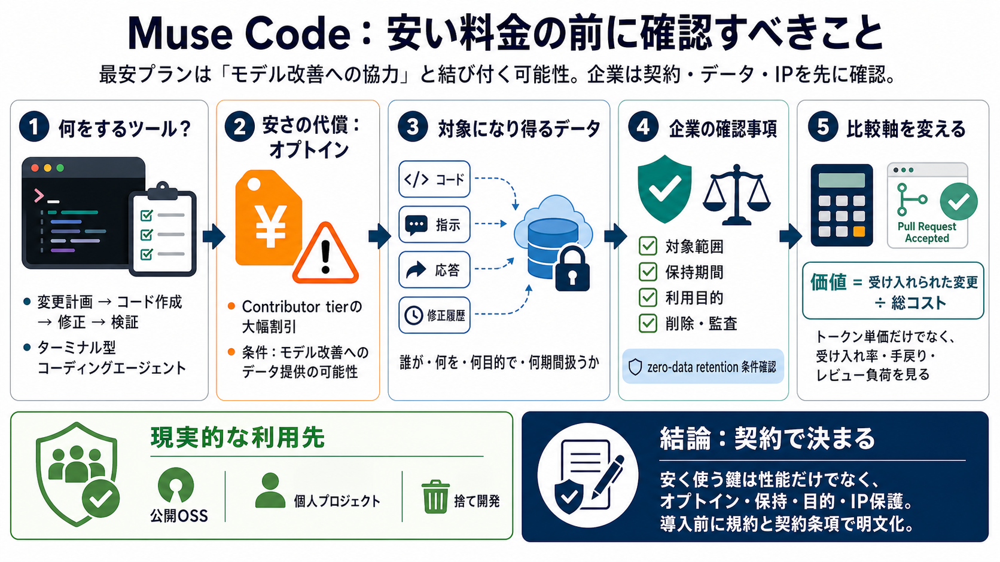

META / MUSE CODE
02 / 12
料金は安いが、条件が重い
Muse Code
Metaのコーディングエージェントは“変更計画〜検証”まで支援する一方、最安プランがモデル改善のためのオプトインと結び付くため、企業では慎重な確認が必要になる。
PROBLEM
03 / 12
安さの代償
オプトイン
最安のContributor tierは、モデル改善に協力するためのデータ提供オプトインを条件としている可能性が高く、ソフトウェア開発現場ほど抵抗が起きやすい。
焦点（契約）
「誰が」「どのデータを」「何の目的で」「どれくらいの期間」扱うか
焦点（実務）
コードだけでなく、指示・応答・修正履歴も対象になり得る点
ARCHITECTURE
04 / 12
ターミナル型の支援
変更の連続性
Muse CodeはMuse Spark 1.2を基盤とし、単発の提案ではなく、複雑なソフトウェア作業を終端まで支援する“ターミナル型”エージェントとして位置付けられる。
i. 変更計画
何をどう直すかの段取りを作る
ii. コード作成
実装を生成し、必要に応じて進める
iii. 修正
差し戻しや追加要件に追随する
iv. 検証
結果の妥当性（レビュー可能性）まで意識する
COMPARISON
05 / 12
従量課金の立ち位置
トークン安
従量課金では、他社（Claude Code、Codex）より低価格帯を狙う戦略が示され、入口の“安さ”は分かりやすい。
通常利用
入力/出力トークンの従量課金で低価格帯を想定
ただし
最安の格差は“契約条件（オプトイン）”が鍵になる
EVIDENCE
06 / 12
最安＝協力と交換
Contributor
記事の中心論点は、Contributor tierの大幅割引が“モデル改善への協力オプトイン”と結び付く可能性がある点で、技術幹部の慎重姿勢につながっている。
期待
コストを桁違いに下げる
条件
モデル改善のためのオプトイン
懸念
データ保護・IP（知的財産）と衝突
RISK
07 / 12
証拠は不完全でも、影響は大きい
競争上の波及
データが外部に渡ることで、将来の類似機能が再現しやすくなる可能性などが懸念される。直接の証拠がなくても、情報漏えいの二次影響として管理すべき論点になる。
i. 再現性
漏えい/学習の結果、類似の作り方が広がり得る
ii. IP価値
コードやプロセスは競争優位に直結しやすい
iii. ガバナンス
契約で不確実性を抑えないと判断が難しい
iv. 二次影響
漏えいだけでなく“参照される・学習される”恐れ
METRICS
08 / 12
比較の軸を変える
受入れコスト
トークン単価だけで比べるのは不十分で、記事では“レビュー後に受け入れられた変更あたり”のコストで評価する見解が示される。
なぜ
AI提案の価値は最終的に採用されて初めて確定する
何を見る
受け入れ率、手戻り工数、品質（レビュー負荷）
DECISION
09 / 12
導入前の確認事項
エンタープライズ
「オプトインで何が提供されるか」「zero-data retentionの条件」「保持期間・目的・削除可否」を契約・規約で明文化し、法務/セキュリティ側の観点で詰める必要がある。
i. 対象データ
コード/プロンプト/応答/修正履歴の範囲（日本語: 対象範囲）
ii. 保存・保持
保持期間、ログの扱い（Japanese: 保持）
iii. 目的
モデル改善への利用の有無と範囲（Japanese: 利用目的）
iv. 削除・監査
削除要求の可否、監査/証跡（Japanese: 監査）
SCOPE
10 / 12
現時点の現実解
使う場所
現時点では、記事はリスクが相対的に低い領域として「公開のOSS作業」「個人プロジェクト」「捨て開発（throwaway prototypes）」での活用を現実的とまとめている。
低リスク
公開OSS（公開前提）
限定利用
個人プロジェクト（情報分離）
実験
throwaway prototypes（捨て前提）
CLOSING
11 / 12
結論：契約で決まる
判断基準
Muse Codeを安く使う鍵は性能だけでなく契約条件（オプトイン、保持、目的）にある。導入判断では「受け入れられた変更あたりのコスト」を含めつつ、データガバナンスとIP保護を先に確定させるのが筋になる。
すべき次の一手：Contributor tierの“割引条件”を、利用規約・データ取り扱いポリシー・契約条項で具体化し、zero-data retention（可能なら）の正式条件を確認する。
REFERENCES
12 / 12
References
No references found